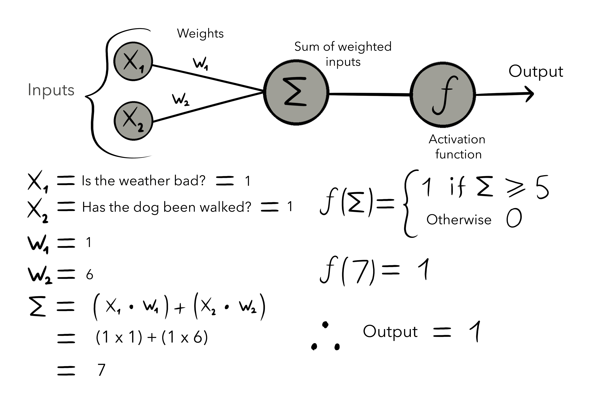

Patterns are everywhere, from the fractal symmetry of romanesque cauliflowers, to the rhythmic cadences in everyday speech. Superior Pattern recognition is the fundamental basis of the human brain including intelligence, imagination, language, and the belief in imaginary entities such as ghosts and gods. If you’ve ever watched a toddler learn words and concepts, you can almost see the brain making connections between synapses and firing neurons as the child begins to connect the dots and recognise patterns for differentiating between objects. The more you think about it, the more you can see patterns all around you. Our brains process ‘inputs’ from our environment, categorize them (that’s a snake), and in a matter of nanoseconds, generate an ‘output’ (watch out). Take the image below for example.
In a matter of milliseconds, you effortlessly recognised this number as 3152, right? You just knew that the first digit was a 3; there was no conscious thinking involved. Your brain didn’t go, “Ah, two half ellipses cut at the minor axis connected together with a loop in the middle, so that’s a 3.” Designing rules to recognise a handwritten digit is unnecessarily complicated, traditional programs involve logic trees. If this happens, then that happens. All of the potential outcomes for the system are preprogrammed, which is why, historically, it’s been quite difficult for computer programs to recognise them. Neural networks however, are built without such specific logic. They loosely mimic brains: taking inputs, processing them, and generating an output. Like us, they “learn” to recognise patterns. Normally this is done by training them on labelled datasets: supervised learning, or conversely training them on unlabelled data and leaving them to find groupings in the data or hidden patterns: unsupervised learning. Before we get into the details of “learning”, we’ll take a look at the most basic artificial neurons: the perceptron, and how it processes inputs and produces an output.
Today the perceptron is hardly ever used in practice however, most commonly used models of artificial neurons follow the same general principles set by the perceptron.
So what is a Perceptron?
They take a number of binary inputs x1,x2,x3,...,xn, apply a “weight” to each those values, sum the result, pass that through an activation function and produces a single binary output. In order to better illustrate how it works, let’s go through an example. Say you have a dog. There are two factors that contribute towards the decision to walk your dog: Has it been walked in the past 24 hours, and is the weather bad. The weather isn’t that big of a deal, but not walking the dog for more than 24 hours is shameful . Our inputs have to be binary, so we’ll convert them into questions. Has the dog been walked in the past 24 hours? 1 for yes, and 0 for no. Is the weather bad? 1 for yes, and 0 for no. It’s important to remember that the neural network cannot have this logic pre-programmed, it has to learn it by itself. How will it know the importance of each of its inputs? The answer is the weights. Remember when we said the weather isn’t that big of a deal if the dog hasn’t been walked in the past 24h hours? The weights are simply a numerical representation of this preference. A larger weight means that the neural network considers the input associated with that weight of greater importance than other inputs. For the purpose of our example, let’s set suitable weights; 1 for the weather and 6 for having walked the dog. And for our inputs let’s say the weather is bad (1) and the dog has not been walked in the past 24 hours (1). How is the output calculated? Let’s take a look.
So what’s happening here? We start by multiplying the inputs by their respective weights, and sum together the results. This is called linear combination. In our case, the linear combination produced a value of 7. This is then passed as a parameter to the activation function, which in this case is a Heaviside step function with a threshold value of 5. What does this mean? The Heaviside step function will simply produce an output of 1 if a value greater than or equal to its threshold is supplied to it, otherwise it will output a value of 0. If the output is 1 you should walk the dog, if it’s 0 you should not. In this example 7 > 5, so the output will be 1 and you should walk the dog.
You have just seen how weights impact the final value of the output. In this example, I purposely set the weights to values that would make the example work. In reality, we set the weights to random values and the network adjusts those weights based on the errors in the output produced by the previous set of weights. This is called training the network.
So, how useful is this really? The answer is not very. A single perceptron is not capable of handling more complex and meaningful tasks such as handwritten number recognition. However, if we stack many of these perceptrons in layers to create a network of them, employ an activation function, such as a sigmoid function, and make use of something called backpropagation, we can then handle such a problem. That’s exactly what we’ll be doing in the next section.